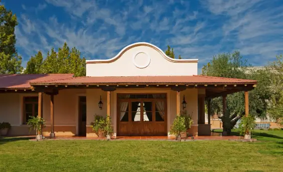
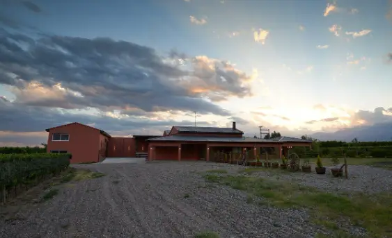

Bodega Sol de Los Andes
Sol de Los Andes se especializa en vinos de profundidad y calidad, que capturan el carácter del Valle de Uco. Te invitamos a vivir una experiencia gastronómica disfrutando maridajes exquisitos con los vinos de la bodega.

Bodega Valle del Malbec
Valle del Malbec destaca por vinos que reflejan la pureza del Valle de Uco, ganando reputación por su atención al detalle y su compromiso con la calidad. Veni a disfrutar de visitas guiadas, degustaciones y almuerzos en nuestro restaurante gourmet.